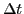
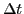

Next: Component accelerations. Curvilinear motion. Up: Simple applications of the Previous: Component velocities. Curvilinear motion. Contents Index
In general,  will be a function of
will be a function of  .
Now let
.
Now let  take on an increment , then
take on an increment , then  takes
on an increment , and
is the average acceleration of
P during the time interval .
We define the acceleration
takes
on an increment , and
is the average acceleration of
P during the time interval .
We define the acceleration  at any instant as the
limit of the ratio
as approaches
the limit zero; that is,
at any instant as the
limit of the ratio
as approaches
the limit zero; that is,